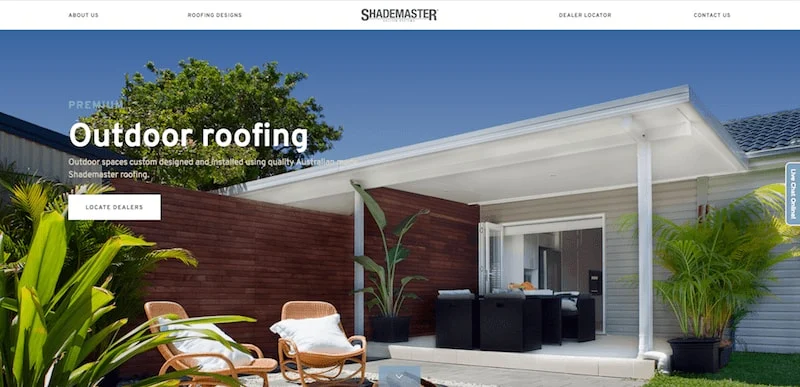
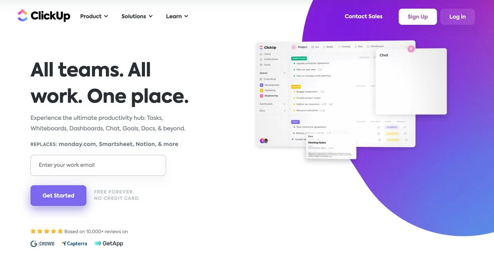
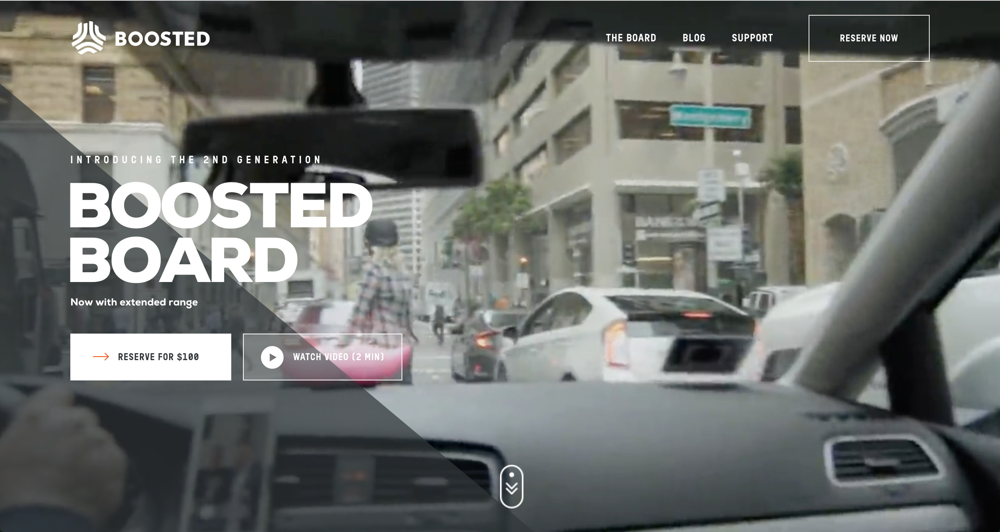
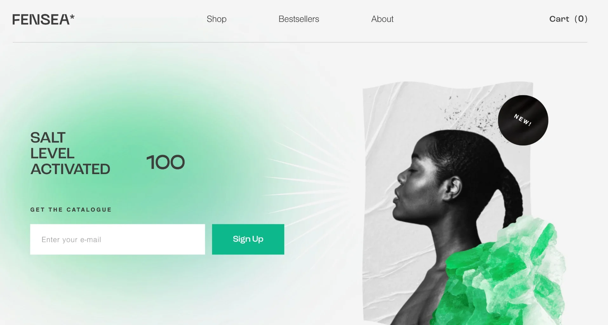

Home
About
My Portfolio

Personal Profile
I’m a software engineer in Santa Barbara, CA with a passion for computer science, electrical engineering and embedded systems technology.Professionally, my primary languages are C#, VB.NET, Java, SQL, C, C++, HTML, JavaScript, Assembly Language, Perl, and Python, using Visual Studio and Eclipse..
I appreciate you taking the time to learn about me, and I look forward to hearing from you.
My Software Engineering Experience
I earned a Bachelor’s degree in Mechanical Engineering, and then a Master’s degree in Electrical Engineering from the University of California Santa Barbara. While attending UCSB, I began my software engineering career as a VMS Systems Programmer for General Research Corporation, holding a secret security clearance. There I became one of the divisions top programmers, updating device drivers, writing the EDX Editor which became very popular, and earning steady recognition for outstanding contributions.
In 1992 I joined Applied Magnetics Corporation. I spent eight years as a VMS Systems Programmer writing and maintaining their manufacturing execution software applications. In this position I wrote, maintained and upgraded a database program for tracking wafer defects that transformed and reduced defect tracking time from 5 minutes to 10 seconds. Soon after the company closed, I accepted a position as Software Developer and Chief Editor for Multi-Edit Software, Inc. I completed code development for their text and code editor, identified and fixed bugs, and produced extensive documentation. Most notably, I was the Chief Editor for Multi-Edit’s 2006 User’s Manual.
For the majority of the time since leaving Multi-Edit Software, Inc., I have been involved in cutting-edge, project-based work as a Software Engineer Consultant and Researcher. I have also converted numerous books to Kindle and EPUB format, and I am a prolific writer. My published independent research has earned 5-Star Ratings from Amazon.com.
I find the field of software engineering enormously rewarding and I am excited to be a part of it. Originally we wrote procedural code and created code libraries. Today, we create OOP programs using OOAD principles and UML diagrams, following the SOLID and DRY principles of good software design. We strive to write code which is easy to maintain and modify. Software design is constantly evolving and the possibilities within it are endless.
Projects
I have attached pictures of several of the websites that I have created over time during my career in the field of sotware engineeering and their respective links.
Shademaster
Clickup
Boosted
Wealthsimple
Fensea




For any inquiries contact me using any of my contacts below :